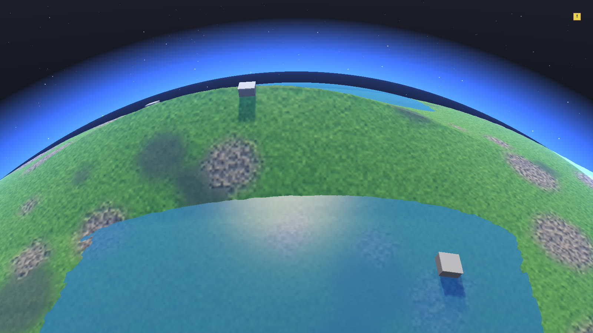

Cube-sphere
Six grid faces: units, paths, fog of war and territory work on a sphere as on a flat map.
Engine systems / Planets and map generation
Spherical worlds and maps from a seed
Cube-sphere planets with orbits and a terrain generator: erosion, rivers, biomes and fair starting positions.

Six grid faces: units, paths, fog of war and territory work on a sphere as on a flat map.
Planets and moons on deterministic orbits, transit between bodies.
Integer noise, erosion, rivers and biomes; presets for flat maps and planets.
Symmetric starting positions and resources placed from the game's types.
A map is made at match start from a seed; a Generation window in the editor.
Other systems